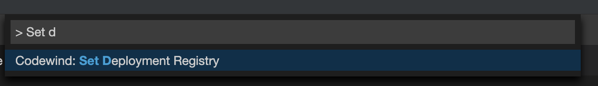
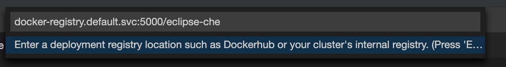
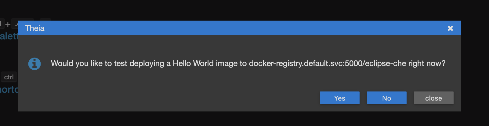

Installing Codewind on Eclipse Che
Table of Contents
- Prerequisites
- Installing Che with chectl
- Enabling privileged and root containers to run
- After installing Che
- Creating the Codewind workspace
- Updating the version
Prerequisites
- Set up the PersistentVolume (PV) with either Network File System (NFS) or GlusterFS.
- For NFS, set 777 permissions for the exported folders and ownership of
nobody:nogroup. - You do not need to set up the PV for local Kube, such as Minikube, Minishift, Docker Desktop, and others.
- For NFS, set 777 permissions for the exported folders and ownership of
- Ensure the cluster can pull images from
docker.io/eclipse.- Both Eclipse Che and Eclipse Codewind host their Docker images on
docker.io/eclipse. Ensure that your cluster can pull from that registry and does not havePodSecurityPoliciesblocking it from accessing Docker Hub.
- Both Eclipse Che and Eclipse Codewind host their Docker images on
- Set up the ClusterRole for Codewind.
- Clone the Codewind Che plug-in repository
- Enter the
cdcommand to go to thecodewind-che-pluginrepository. - Run the
kubectl apply -f setup/install_che/codewind-clusterrole.yamlcommand to create a cluster role with the required permission. - Next, run the
kubectl apply -f setup/install_che/codewind-rolebinding.yamlcommand.
Installing Che with chectl
The fastest way to install Eclipse Che for use with Codewind is to use the chectl CLI. For instructions on installing the chectl CLI tool, see Installing the chectl management tool.
Complete the following steps after you install chectl:
- Download the codewind-che checluster yaml file to your machine.
- You can modify this file, but leave the
spec.server.cheWorkspaceClusterRolefield set toeclipse-codewindand thespec.storage.preCreateSubPathsfield set totrue.
- You can modify this file, but leave the
- If you install on Kubernetes, determine your Ingress domain. If you’re unsure of your Ingress domain, ask your cluster administrator.
- Set the
spec.server.ingressDomainfield in the Che .yaml to the Ingress domain.
- Set the
- Install Che:
- On OpenShift 3.x run the following command:
chectl server:start --platform=openshift --installer=operator --che-operator-cr-yaml=<codewind-che.yaml file> - On Kubernetes run the following command:
chectl server:start --platform=k8s --installer=operator --domain=<ingress-domain> --che-operator-cr-yaml=<codewind-che.yaml file>
- On OpenShift 3.x run the following command:
Enabling privileged and root containers to run
Codewind is required to run as privileged and as root, because it builds container images. If your cluster is OpenShift 3.x, run the following commands, where <che namespace> is the namespace you installed Che in:
- Enter
oc adm policy add-scc-to-group privileged system:serviceaccounts:<che namespace>to enable privileged containers. - Enter
oc adm policy add-scc-to-group anyuid system:serviceaccounts:<che namespace>to enable containers to run as root.
After installing Che
Adding registries in Che
After Che is started and running, add the container registry that will be used with Codewind.
- On IBM Cloud Private, push your to any Docker registry except the internal Docker registry
- On OpenShift or other Kube platforms, you can push your images to any Docker registry, such as Dockerhub, Quay.io, Google Cloud Registry (GCR), and more.
Complete the following instructions to add the registries:
- Server:
<registry-to-push-images-to> - Username:
<Your username> - Password:
<Your password>
For further information on adding deployment registries to Che, consult our registry documentation
Creating the Codewind workspace
Confirm the Docker registry secrets.
Confirm that you added the docker registry secrets in the Che dashboard. Go to Administration>Add Registry to check for the secrets.
Creating the Codewind workspace with a Devfile
The general format for creating a Che workspace via a factory is:
http://<che ingress domain>/f?url=<hosted devfile URL>
We provide a ready-to-use devfile with the Codewind plug-ins. Enter the following URL to create a workspace from the devfile:
http://<che ingress domain>/f?url=https://raw.githubusercontent.com/eclipse/codewind-che-plugin/master/devfiles/0.4/devfile.yaml
For other sample devfiles, see https://github.com/kabanero-io/codewind-templates/tree/master/devfiles
Checking for the Codewind pod
- If you are using the Terminal, switch to use the workspace namespace. You can check for the namespace with
kubectl get ns. - Ensure the projects are cloned into the workspace. You might need to refresh the browser to trigger the clone.
Configuring Codewind for Tekton pipelines
From your command line, enter the following commands if you want to use existing Tekton installations with Codewind:
oc apply -f setup/install_che/codewind-tektonrole.yaml
oc apply -f setup/install_che/codewind-tektonbinding.yaml
For more information about Tekton, see Getting started with the Tekton Dashboard Webhooks Extension.
After installing Codewind
Setting the Docker registry
Upon creating a Codewind workspace. The container registry to deploy your projects to must be set. When you go to create or add an existing project to Codewind, Codewind will prompt you for the registry. See (Docker registry docs) for guidance on using proper container registries
If you would like to change the registry that’s used at any time, run the Codewind: Set Deployment Registry command in Theia to dynamically set a new registry for your workspace.
.
.
.
Note: To proceed, you need to have added the registry credentials with Che.
- Codewind restarts with the changes added.
Using Codewind from the Che Theia IDE
Binding a project:
Go to View>Find Command…>Codewind: Add Project.
- Alternative instructions:
- From the sidecar container, run the following command:
curl -k -H "Content-Type: application/json" -X POST https://codewind-release:9191/api/v1/projects/bind -d '{"name": "microproj", "path": "/microclimate-workspace/microproj", "language": "java", "projectType": "liberty"}'
- From the sidecar container, run the following command:
Checking the status of a project
Go to View>Find Command…>Codewind: App status.
- Alternative instructions:
- From the sidecar container, run the following command:
curl -k -H "Content-Type: application/json" -X GET https://codewind-release:9191/api/v1/projects
- From the sidecar container, run the following command:
Building a project
Go to View>Find Command…>Codewind: Build.
- Alternative instructions:
- Enter the following command:
curl -k -H "Content-Type: application/json" -X POST https://codewind-release:9191/api/v1/projects/8801a6d0-7805-11e9-b22f-19482c5ffbd6/build -d '{"action": "build"}'
- Enter the following command:
Updating the version
Restart the Codewind workspace in Che. Che automatically pulls the newest version of Codewind and the Theia extension.